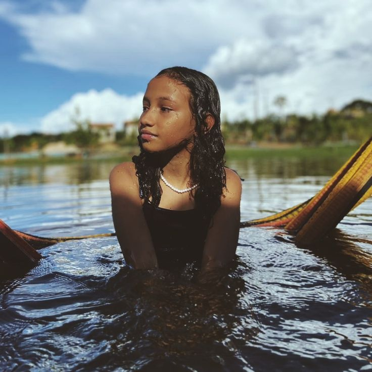

Comentários
Museu Paraense Emílio Goeldi
Mariana da Silva
Eu, Mariana Silva, estudante de Biologia, adorei minha visita ao Museu Paraense Emílio Goeldi! Fui com a minha turma e achei a experiência incrível.
O jardim botânico é um laboratório vivo de plantas da Amazônia, e como estudante de Ciências Ambientais, pude aprender muito sobre a flora local.
As exposições sobre a fauna amazônica, principalmente a parte sobre os primatas, foram muito interessantes. O museu não só é educativo, mas também nos faz refletir sobre a importância da preservação da biodiversidade da região.
Lucas Oliveira
Meu nome é Lucas Oliveira e sou estudante de História. Fui ao Museu Paraense Emílio Goeldi com um grupo de colegas da faculdade, e achei a visita muito enriquecedora.
As exposições sobre as culturas indígenas da Amazônia me ajudaram a entender melhor os aspectos culturais da região.
A parte interativa do museu também é excelente, facilitando a aprendizagem. Para quem está estudando o Brasil e suas diversas regiões, é um local indispensável.
Centro Histórico de Salvador
João Pereira
Oi, sou João Pereira, estudante de Geografia, e minha visita ao Centro Histórico de Salvador foi fantástica.
Fiquei encantado com a maneira como as diferentes influências culturais se misturam ali, especialmente na parte do Mercado Modelo.
A vista da Baía de Todos os Santos também é impressionante.
Como estudante de Geografia, percebi como a cidade está inserida em um contexto ecológico e social fascinante.
Uma viagem que me ensinou muito sobre a história e o espaço urbano brasileiro.
Beatriz Costa
Beatriz Costa aqui, estudante de Turismo! Fui para Salvador a trabalho, mas aproveitei para visitar o Centro Histórico. Que lugar maravilhoso!
A arquitetura colonial da cidade me deixou sem palavras, e a história que emana de cada esquina é única. Como estudante, foi uma ótima oportunidade de vivenciar o conteúdo que aprendo em sala de aula.
A Igreja de São Francisco é uma obra-prima, e andar pelas ladeiras de Pelourinho é um passeio imersivo na cultura baiana.
Parque Nacional Marinho de Fernando de Noronha
Gabriela Santos
Eu sou Gabriela Santos, estudante de Oceanografia, e tive a oportunidade de visitar Fernando de Noronha com minha turma durante um intercâmbio acadêmico.
O parque marinho foi um verdadeiro laboratório natural! A biodiversidade marinha é surreal, e os mergulhos nas piscinas naturais foram inesquecíveis.
Observamos tartarugas marinhas e diversos tipos de peixes. Como estudante de ciências do mar, pude aplicar muito do que aprendi em sala de aula em um ambiente real e deslumbrante.
Thiago Rodrigues
Meu nome é Thiago Rodrigues e sou estudante de Turismo. Durante um estágio na área, fui até Fernando de Noronha e fiz uma visita ao Parque Nacional Marinho.
O local é simplesmente espetacular. Além das paisagens deslumbrantes, o que mais me impressionou foi o cuidado com a preservação ambiental, o que faz a experiência ser ainda mais especial.
Como estudante da área, entendi melhor o impacto do turismo e como a conscientização ambiental deve ser priorizada para garantir a sustentabilidade desses ecossistemas.
Pantanal

Oi, sou Carolina Lima, estudante de Ciências Biológicas, e tive a sorte de visitar o Pantanal com um grupo de pesquisa.
A quantidade e diversidade de animais que vimos durante a expedição me deixaram fascinada.
A observação das aves e dos mamíferos foi uma experiência única. O Pantanal é um dos maiores ecossistemas de água doce do mundo, e como estudante, foi uma oportunidade incrível para entender melhor os processos ecológicos e a importância da preservação dessa região tão rica.
Rafael Souza
Meu nome é Rafael Souza e sou estudante de Engenharia Ambiental. Fui ao Pantanal para um projeto de campo da faculdade, e posso dizer que foi uma das experiências mais enriquecedoras da minha vida. A riqueza natural do lugar é imensa, com uma variedade impressionante de fauna e flora. Para quem estuda sustentabilidade e preservação, o Pantanal é um exemplo prático de como é fundamental equilibrar o desenvolvimento com a conservação dos ecossistemas.
Parque Nacional de Chapada dos Veadeiros
Alice Martins

Sou Alice Martins, estudante de Geografia, e fiz uma viagem à Chapada dos Veadeiros com a minha turma de faculdade. O Parque Nacional é um dos lugares mais incríveis que já visitei. As trilhas pelas cachoeiras e os mirantes são espetaculares, e o contato direto com a natureza nos ensina muito sobre a geodiversidade do Brasil. Como estudante, foi fascinante ver as formações rochosas e a vegetação típica do Cerrado de perto, além de entender como a preservação do local é importante para o equilíbrio ecológico.
Marcos Almeida
Meu nome é Marcos Almeida e sou estudante de Biotecnologia. Estive na Chapada dos Veadeiros durante um trabalho de campo, e a experiência foi surpreendente. O ecossistema local é tão diverso, e eu pude observar de perto espécies endêmicas do Cerrado. Além disso, as paisagens são de tirar o fôlego, especialmente os saltos d'água das cachoeiras. O trabalho de conservação que acontece por lá também é um exemplo de como é possível manter a beleza natural e garantir a sustentabilidade a longo prazo. Uma verdadeira aula de ecologia!
Museu de Arte de São Paulo (MASP)
Ana Carolina
A visita guiada foi incrível para entender a história da arte e como ela reflete diferentes momentos históricos. Os estudantes ficaram fascinados com o cavalete de cristal.
Lucas Pereira
Os professores destacaram como as obras do MASP podem ser usadas em aulas de história, arte e sociologia. Foi uma experiência enriquecedora para a turma.